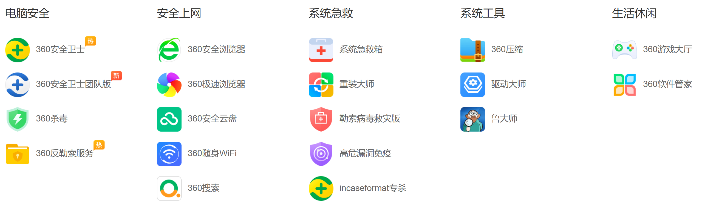

Tips for research tools
Contents
List of recommended software
zotero
a free and open-source reference management software
https://www.zotero.org/
typora
a markdown editor
https://typora.io/
obsidian
a markdown editor
https://obsidian.md/
everything
a free desktop search utility
https://www.voidtools.com/
7-zip
a free and open-source file archiver
https://www.7-zip.org/
Input Method Editor
Windows 10 IME
Norton/Avast/Microsoft Defender Antivirus in Windows10
Anti-virus or anti-malware software
Operating system
List of STRONGLY not recommended software
- 360

-
XX电脑管家
-
2345

-
驱动精灵
-
…to be continued…